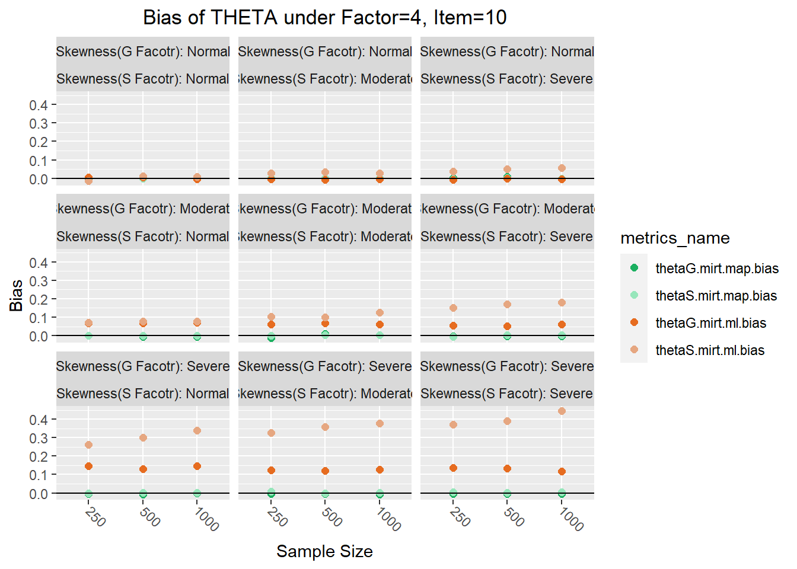
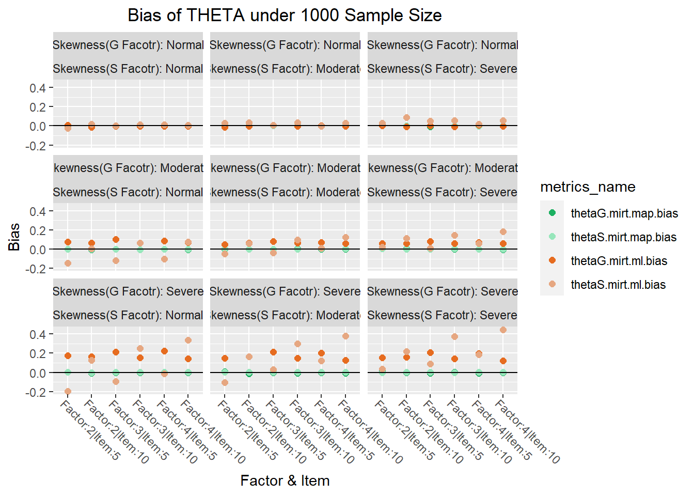
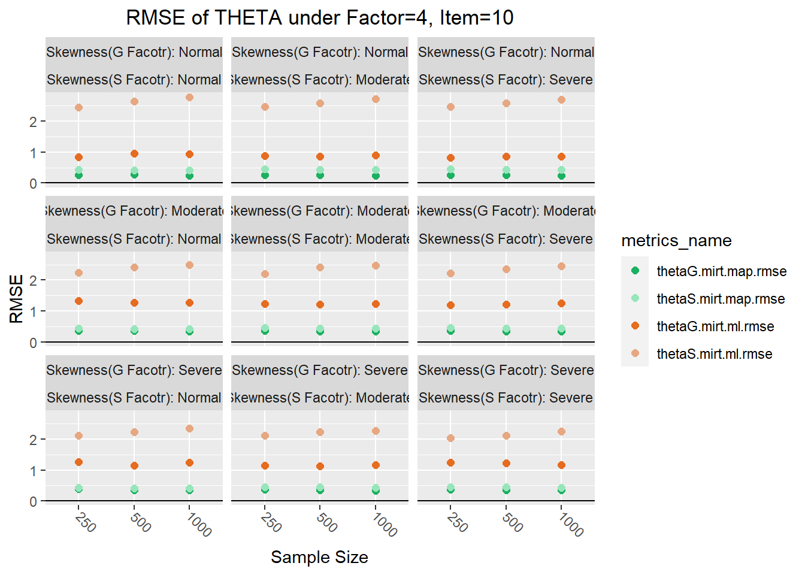
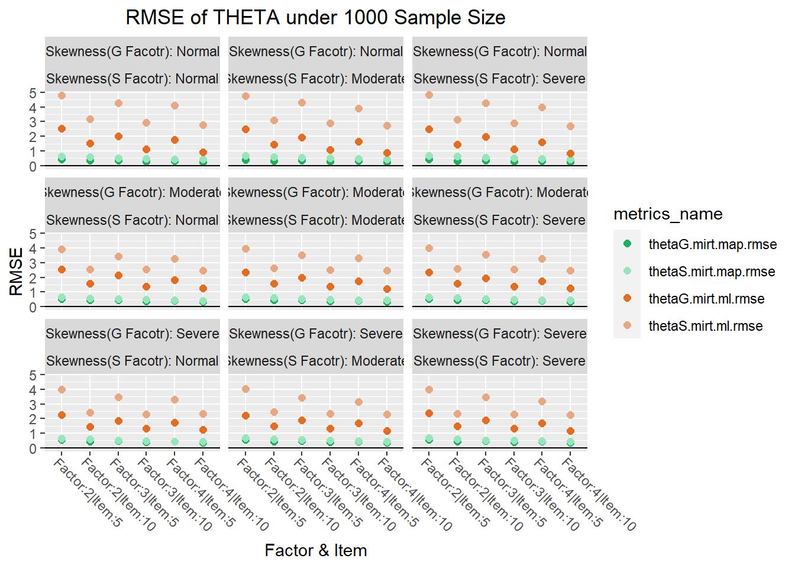
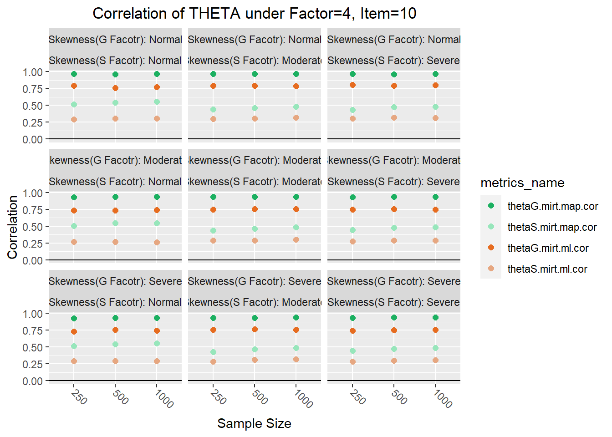
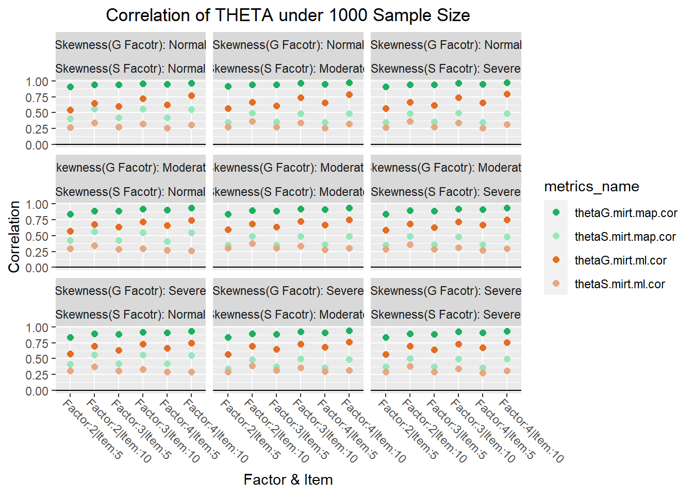

Report of Theta of Nonnormal Bifactor Model
Calculate Bias and Rmse
######Infinite Number in MAP:
[1] 0######Infinite Number in ML
[1] 272354`summarise()` has grouped output by 'Factor', 'I', 'N', 'Fg'. You can override
using the `.groups` argument.
`summarise()` has grouped output by 'Factor', 'I', 'N', 'Fg'. You can override
using the `.groups` argument.Merge all Bias and Rmse into a longer table
1. Bias of Theta
Plot comparison MAP and ML : thetaG and thetaS, under Factor=4, Item=10

Plot comparison MAP and ML : thetaG and thetaS, under 1000 sample size

2. RMSE of Theta
Plot comparison MAP and ML : thetaG and thetaS, under Factor=4, Item=10

Plot comparison MAP and ML : thetaG and thetaS, under 1000 sample size

3. Correlation of Theta
Plot comparison MAP and ML : thetaG and thetaS, under Factor=4, Item=10

Plot comparison MAP and ML : thetaG and thetaS, under 1000 sample size

4. IMPACT of all conditions
ANOVA for thetaG - theta on General Factor using MAP
Df Sum Sq Mean Sq
Factor 2 0.0000141 7.060e-06
I 1 0.0001826 1.826e-04
N 2 0.0000263 1.313e-05
Fg 2 0.0001651 8.257e-05
Fs 2 0.0000640 3.200e-05
Factor:I 2 0.0000732 3.660e-05
Factor:N 4 0.0000219 5.460e-06
I:N 2 0.0000531 2.656e-05
Factor:Fg 4 0.0002129 5.321e-05
I:Fg 2 0.0001780 8.901e-05
N:Fg 4 0.0001250 3.126e-05
Factor:Fs 4 0.0001242 3.106e-05
I:Fs 2 0.0000818 4.091e-05
N:Fs 4 0.0000416 1.041e-05
Fg:Fs 4 0.0001125 2.813e-05
Factor:I:N 4 0.0001091 2.727e-05
Factor:I:Fg 4 0.0001201 3.002e-05
Factor:N:Fg 8 0.0000892 1.115e-05
I:N:Fg 4 0.0000182 4.560e-06
Factor:I:Fs 4 0.0001447 3.617e-05
Factor:N:Fs 8 0.0004284 5.355e-05
I:N:Fs 4 0.0000190 4.750e-06
Factor:Fg:Fs 8 0.0000749 9.370e-06
I:Fg:Fs 4 0.0001121 2.802e-05
N:Fg:Fs 8 0.0001725 2.156e-05
Factor:I:N:Fg 8 0.0000963 1.204e-05
Factor:I:N:Fs 8 0.0000785 9.810e-06
Factor:I:Fg:Fs 8 0.0002882 3.602e-05
Factor:N:Fg:Fs 16 0.0003591 2.245e-05
I:N:Fg:Fs 8 0.0004618 5.772e-05
Factor:I:N:Fg:Fs 16 0.0004513 2.821e-05ANOVA for thetaS - theta on Specific Factor using MAP
Df Sum Sq Mean Sq
Factor 2 2.500e-05 1.250e-05
I 1 3.660e-05 3.660e-05
N 2 1.744e-05 8.720e-06
Fg 2 2.826e-05 1.413e-05
Fs 2 1.715e-05 8.570e-06
Factor:I 2 3.394e-05 1.697e-05
Factor:N 4 2.578e-05 6.440e-06
I:N 2 1.083e-05 5.410e-06
Factor:Fg 4 1.104e-04 2.760e-05
I:Fg 2 9.790e-06 4.900e-06
N:Fg 4 7.960e-06 1.990e-06
Factor:Fs 4 1.190e-06 3.000e-07
I:Fs 2 2.335e-05 1.167e-05
N:Fs 4 7.085e-05 1.771e-05
Fg:Fs 4 2.326e-05 5.810e-06
Factor:I:N 4 6.470e-06 1.620e-06
Factor:I:Fg 4 2.473e-05 6.180e-06
Factor:N:Fg 8 5.859e-05 7.320e-06
I:N:Fg 4 2.984e-05 7.460e-06
Factor:I:Fs 4 1.417e-05 3.540e-06
Factor:N:Fs 8 4.470e-05 5.590e-06
I:N:Fs 4 7.428e-05 1.857e-05
Factor:Fg:Fs 8 1.072e-04 1.340e-05
I:Fg:Fs 4 1.988e-05 4.970e-06
N:Fg:Fs 8 8.019e-05 1.002e-05
Factor:I:N:Fg 8 4.064e-05 5.080e-06
Factor:I:N:Fs 8 7.986e-05 9.980e-06
Factor:I:Fg:Fs 8 4.472e-05 5.590e-06
Factor:N:Fg:Fs 16 1.178e-04 7.360e-06
I:N:Fg:Fs 8 4.527e-05 5.660e-06
Factor:I:N:Fg:Fs 16 1.441e-04 9.010e-06ANOVA for thetaG - theta on General Factor using ML
Df Sum Sq Mean Sq
Factor 2 0.0042 0.0021
I 1 0.0134 0.0134
N 2 0.0000 0.0000
Fg 2 0.8064 0.4032
Fs 2 0.0026 0.0013
Factor:I 2 0.0096 0.0048
Factor:N 4 0.0001 0.0000
I:N 2 0.0003 0.0002
Factor:Fg 4 0.0011 0.0003
I:Fg 2 0.0174 0.0087
N:Fg 4 0.0004 0.0001
Factor:Fs 4 0.0003 0.0001
I:Fs 2 0.0008 0.0004
N:Fs 4 0.0001 0.0000
Fg:Fs 4 0.0010 0.0003
Factor:I:N 4 0.0001 0.0000
Factor:I:Fg 4 0.0061 0.0015
Factor:N:Fg 8 0.0006 0.0001
I:N:Fg 4 0.0004 0.0001
Factor:I:Fs 4 0.0006 0.0001
Factor:N:Fs 8 0.0012 0.0002
I:N:Fs 4 0.0001 0.0000
Factor:Fg:Fs 8 0.0005 0.0001
I:Fg:Fs 4 0.0004 0.0001
N:Fg:Fs 8 0.0008 0.0001
Factor:I:N:Fg 8 0.0004 0.0001
Factor:I:N:Fs 8 0.0002 0.0000
Factor:I:Fg:Fs 8 0.0007 0.0001
Factor:N:Fg:Fs 16 0.0011 0.0001
I:N:Fg:Fs 8 0.0007 0.0001
Factor:I:N:Fg:Fs 16 0.0009 0.0001ANOVA for thetaS - theta on Specific Factor using ML
Df Sum Sq Mean Sq
Factor 2 0.1814 0.0907
I 1 0.7126 0.7126
N 2 0.0075 0.0037
Fg 2 0.3706 0.1853
Fs 2 0.2589 0.1294
Factor:I 2 0.0036 0.0018
Factor:N 4 0.0001 0.0000
I:N 2 0.0075 0.0037
Factor:Fg 4 0.2032 0.0508
I:Fg 2 0.4646 0.2323
N:Fg 4 0.0098 0.0024
Factor:Fs 4 0.0003 0.0001
I:Fs 2 0.0148 0.0074
N:Fs 4 0.0028 0.0007
Fg:Fs 4 0.0439 0.0110
Factor:I:N 4 0.0002 0.0000
Factor:I:Fg 4 0.0024 0.0006
Factor:N:Fg 8 0.0008 0.0001
I:N:Fg 4 0.0014 0.0003
Factor:I:Fs 4 0.0002 0.0000
Factor:N:Fs 8 0.0030 0.0004
I:N:Fs 4 0.0003 0.0001
Factor:Fg:Fs 8 0.0036 0.0005
I:Fg:Fs 4 0.0090 0.0023
N:Fg:Fs 8 0.0034 0.0004
Factor:I:N:Fg 8 0.0038 0.0005
Factor:I:N:Fs 8 0.0022 0.0003
Factor:I:Fg:Fs 8 0.0022 0.0003
Factor:N:Fg:Fs 16 0.0045 0.0003
I:N:Fg:Fs 8 0.0018 0.0002
Factor:I:N:Fg:Fs 16 0.0081 0.0005ANOVA for correlation of thetaG using MAP
Df Sum Sq Mean Sq
Factor 2 0.07341 0.03671
I 1 0.04929 0.04929
N 2 0.00156 0.00078
Fg 2 0.09096 0.04548
Fs 2 0.00026 0.00013
Factor:I 2 0.00314 0.00157
Factor:N 4 0.00021 0.00005
I:N 2 0.00000 0.00000
Factor:Fg 4 0.00403 0.00101
I:Fg 2 0.00269 0.00135
N:Fg 4 0.00017 0.00004
Factor:Fs 4 0.00001 0.00000
I:Fs 2 0.00001 0.00000
N:Fs 4 0.00001 0.00000
Fg:Fs 4 0.00001 0.00000
Factor:I:N 4 0.00001 0.00000
Factor:I:Fg 4 0.00007 0.00002
Factor:N:Fg 8 0.00004 0.00001
I:N:Fg 4 0.00001 0.00000
Factor:I:Fs 4 0.00004 0.00001
Factor:N:Fs 8 0.00001 0.00000
I:N:Fs 4 0.00000 0.00000
Factor:Fg:Fs 8 0.00002 0.00000
I:Fg:Fs 4 0.00000 0.00000
N:Fg:Fs 8 0.00002 0.00000
Factor:I:N:Fg 8 0.00005 0.00001
Factor:I:N:Fs 8 0.00004 0.00000
Factor:I:Fg:Fs 8 0.00001 0.00000
Factor:N:Fg:Fs 16 0.00004 0.00000
I:N:Fg:Fs 8 0.00001 0.00000
Factor:I:N:Fg:Fs 16 0.00005 0.00000ANOVA for correlation of thetaG using MAP
Df Sum Sq Mean Sq
Factor 2 0.0063 0.0032
I 1 0.8829 0.8829
N 2 0.1243 0.0621
Fg 2 0.0013 0.0007
Fs 2 0.1658 0.0829
Factor:I 2 0.0008 0.0004
Factor:N 4 0.0036 0.0009
I:N 2 0.0039 0.0019
Factor:Fg 4 0.0005 0.0001
I:Fg 2 0.0008 0.0004
N:Fg 4 0.0003 0.0001
Factor:Fs 4 0.0004 0.0001
I:Fs 2 0.0004 0.0002
N:Fs 4 0.0005 0.0001
Fg:Fs 4 0.0008 0.0002
Factor:I:N 4 0.0003 0.0001
Factor:I:Fg 4 0.0004 0.0001
Factor:N:Fg 8 0.0003 0.0000
I:N:Fg 4 0.0001 0.0000
Factor:I:Fs 4 0.0003 0.0001
Factor:N:Fs 8 0.0006 0.0001
I:N:Fs 4 0.0003 0.0001
Factor:Fg:Fs 8 0.0006 0.0001
I:Fg:Fs 4 0.0002 0.0000
N:Fg:Fs 8 0.0003 0.0000
Factor:I:N:Fg 8 0.0004 0.0000
Factor:I:N:Fs 8 0.0005 0.0001
Factor:I:Fg:Fs 8 0.0002 0.0000
Factor:N:Fg:Fs 16 0.0012 0.0001
I:N:Fg:Fs 8 0.0003 0.0000
Factor:I:N:Fg:Fs 16 0.0005 0.0000